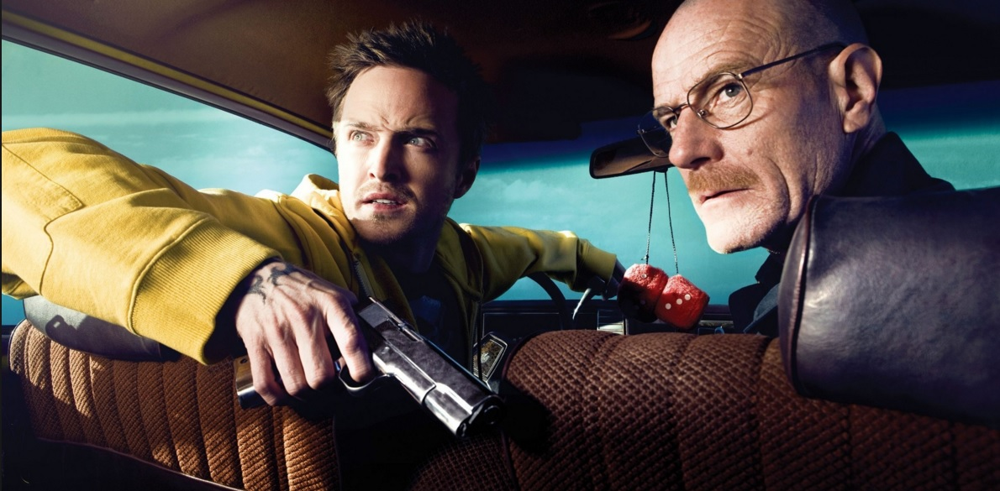

Vince Gilligan escolheu Bryan Cranston para o papel de Walter White baseado no trabalho com ele em um episódio da série de televisão The X-Files, em que Gilligan trabalhou como escritor. Cranston desempenhou um anti-semita com uma doença terminal. Gilligan disse que o personagem tinha de ser ao mesmo tempo repugnante e simpático, e que "Bryan sozinho era o único ator que poderia fazer isso, que poderia retirar esse truque. E isso é um truque. Não tenho ideia de como ele faz isso." os funcionários da AMC, que estavam inicialmente relutantes com a escolha do elenco, tendo conhecido Cranston apenas como um personagem em Malcolm in the Middle, chamou os atores John Cusack e Matthew Broderick para o papel. Quando os dois atores recusaram, os executivos foram persuadidos a lançar Cranston depois de ver ele em X-Files. Cranston contribuiu significativamente para a formação e desenvolvimento da persona Walter White. Quando Gilligan deixou muito do passado de Walter inexplicável durante o desenvolvimento da série, o ator escreveu sua própria história de fundo para o personagem. No início do show, Cranston ganhou 10 libras para refletir declínio pessoal do caráter e tinha os destaques vermelhos naturais de seu cabelo tingido de marrom regular. Ele colaborou com a figurinista Kathleen Detoro em um guarda-roupa de sua maioria neutros cores verde e marrom para fazer o personagem branda e banal, e trabalhou com maquiador Frieda Valenzuela para criar um bigode que ele descreveu como "impotente" e como uma "lagarta morta". Cranston colocou elemento identificados repetidamente dentro de certas partes do roteiro em que ele discordou com a forma como o personagem foi tratado, e foi tão longe para chamar Gilligan diretamente quando ele não podia trabalhar fora desentendimentos com os roteiristas do episódio. Cranston, disse que foi inspirado parcialmente por seu pai idoso para saber como Walter transporta-se fisicamente, que ele descreveu como "um pouco curvado, não ereto, [como se] o peso do mundo estivesse nos ombros deste homem". Em contraste com seu personagem, Cranston tem sido descrito como extremamente brincalhão em conjunto, com Aaron Paul descrevendo-o como "um garoto preso no corpo de um homem".